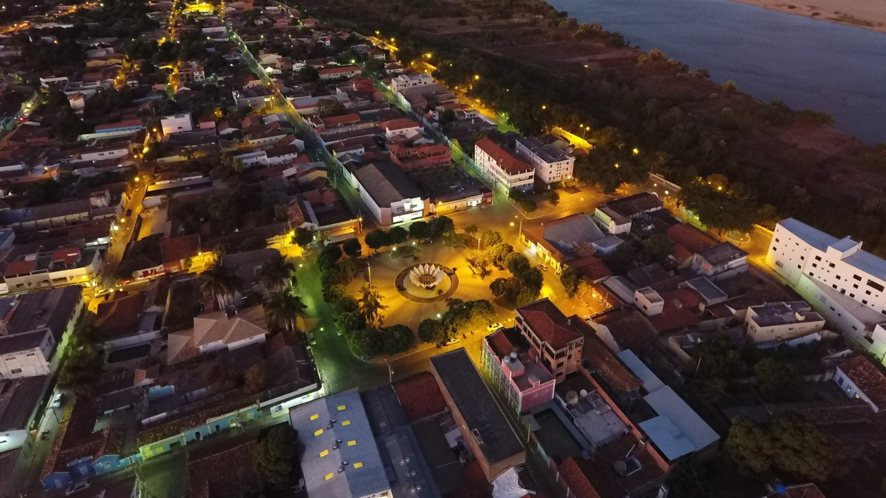

Como chegar em Januária
Descubra as maneiras de viajar para Januária-MG!
Para você, turista de primeira viagem, que deseja saber como chegar em Januária MG, existem algumas opções muito práticas: ir de avião (até a cidade vizinha), de carro ou de ônibus. Saiba mais sobre como ir para essa joia do Norte de Minas Gerais e escolha o meio de transporte e os trajetos ideais na hora de planejar sua viagem!
Como chegar em Januária MG
A dica de ouro para quem deseja pagar barato e otimizar o tempo de viagem é voar até a cidade polo mais próxima que possui aeroporto comercial ativo. Porém, se você curte colocar o pé na estrada, ir de carro ou ônibus pode ser uma excelente aventura, revelando as belas paisagens do cerrado mineiro ao longo do caminho.
Como chegar de avião em Januária MG
Atualmente, o aeroporto de Januária não recebe voos comerciais regulares. A melhor alternativa para quem vem de longe é desembarcar no Aeroporto de Montes Claros (MOC), que conta com ótima infraestrutura e recebe voos diários das principais capitais do Brasil.
Confira as principais rotas aéreas até Montes Claros:
- São Paulo (Guarulhos/Congonhas) → Montes Claros: Voos operados pela LATAM e GOL.
- Campinas (Viracopos) → Montes Claros: Voos operados pela AZUL.
- Belo Horizonte (Confins) → Montes Claros: Voos operados pela AZUL e LATAM.
- Brasília → Montes Claros: Voos operados pela LATAM e AZUL.
Chegando em Montes Claros, é muito simples seguir viagem até Januária. Você pode alugar um carro no próprio aeroporto, pegar um táxi, utilizar os ônibus intermunicipais (viações Gontijo ou Transnorte) ou contratar um transporte compartilhado.
Quantos KMs de Montes Claros a Januária MG?
Pegar um voo até Montes Claros é a forma mais rápida e inteligente de chegar a Januária, pois a distância entre as duas cidades é de apenas 168 km em média. O trajeto de carro ou van leva cerca de 2 horas e meia, feito por estradas asfaltadas e tranquilas.
Como chegar de carro em Januária MG
Se você é do time que adora viajar de carro, Januária tem acessos rodoviários que conectam a cidade a diversas regiões do Brasil. Veja as distâncias e tempos médios saindo de alguns pontos principais:
- De Belo Horizonte (MG): Aproximadamente 600 km de distância. A viagem de carro leva em média 8 horas (ou cerca de 11 horas se optar pelo ônibus).
- De Brasília (DF): Fica a cerca de 500 km. O trajeto leva em média 8 horas de carro.
- De Salvador (BA): Aproximadamente 1.000 km de distância, com uma viagem que dura em torno de 14 horas.
Os principais acessos rodoviários são:
- BR-135: A principal espinha dorsal para quem vem do Sul/Centro de Minas (Belo Horizonte) e de Montes Claros.
- MG-202 / BR-030: Principais vias de acesso para quem desce de Brasília, Goiás ou vem da Bahia.
Ônibus de Belo Horizonte para Januária MG
As viações Gontijo e Transnorte operam o trecho saindo da rodoviária de Belo Horizonte direto para Januária. Viajar de ônibus é uma opção confortável e muito mais barata do que arcar com combustível e aluguel de carro. Juntando o preço de uma passagem de avião promocional até Belo Horizonte ou Montes Claros com a do bilhete rodoviário, você tem como chegar em Januária pagando bem menos do que imagina.
Ônibus de Brasília (DF) até Januária MG
Para quem parta da capital federal, a viação Catedral oferece rotas saindo de Brasília direto para Januária. É uma rota muito procurada por quem mora no Centro-Oeste e quer curtir as belezas do Norte de Minas.